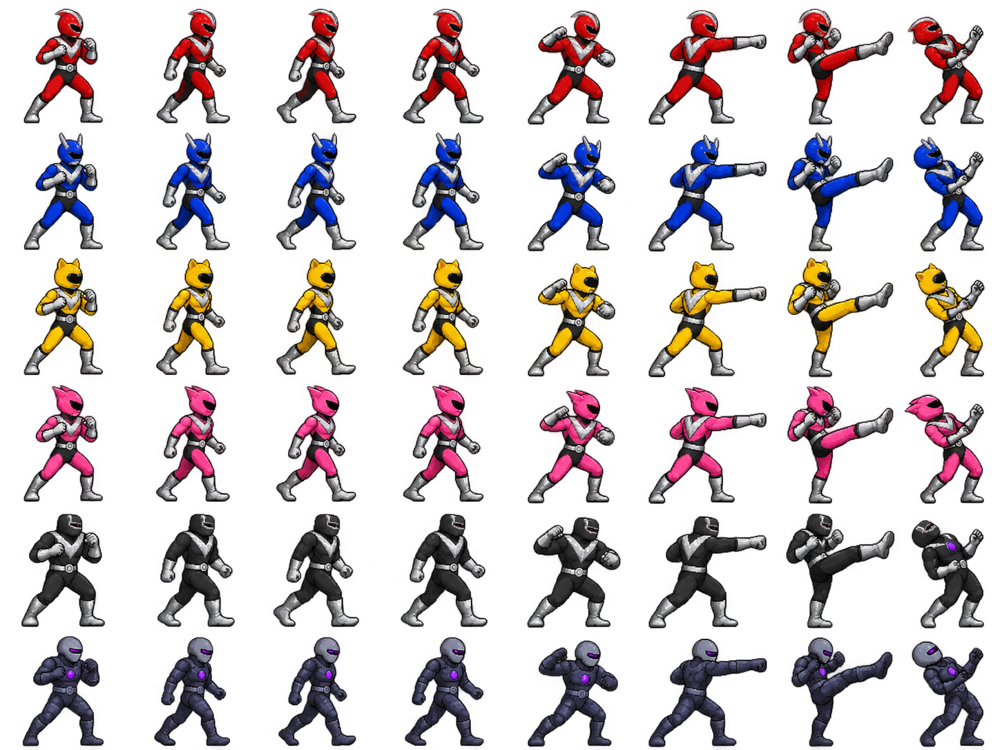
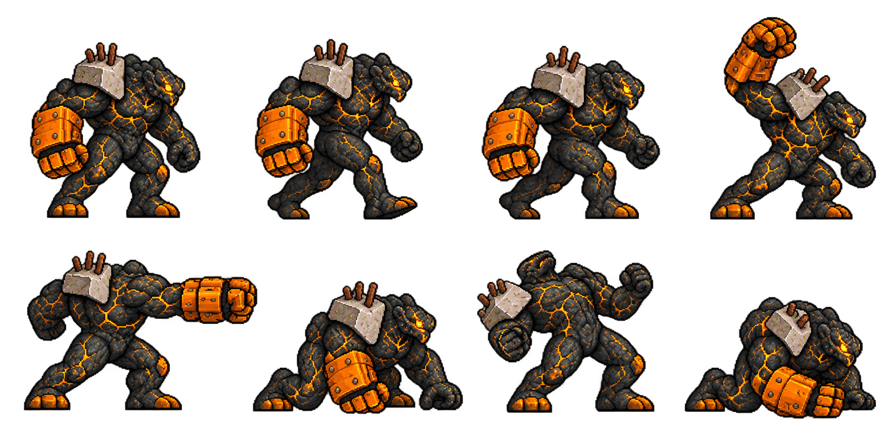
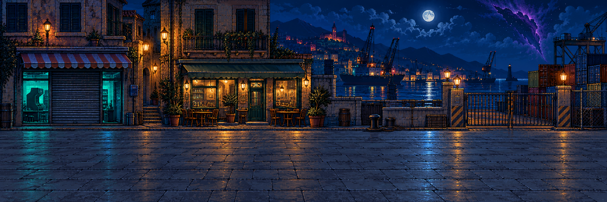
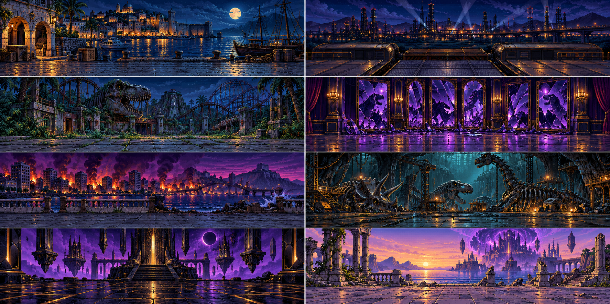
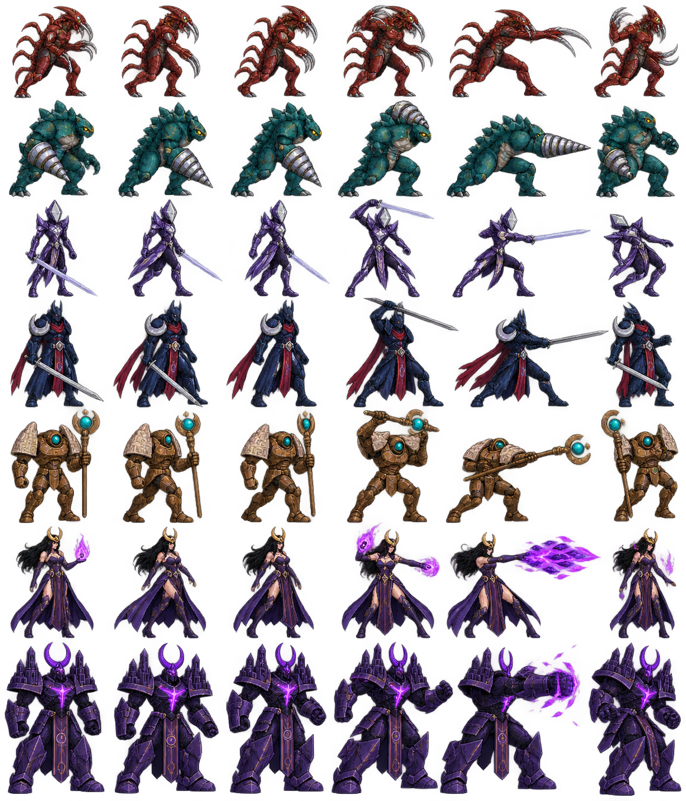
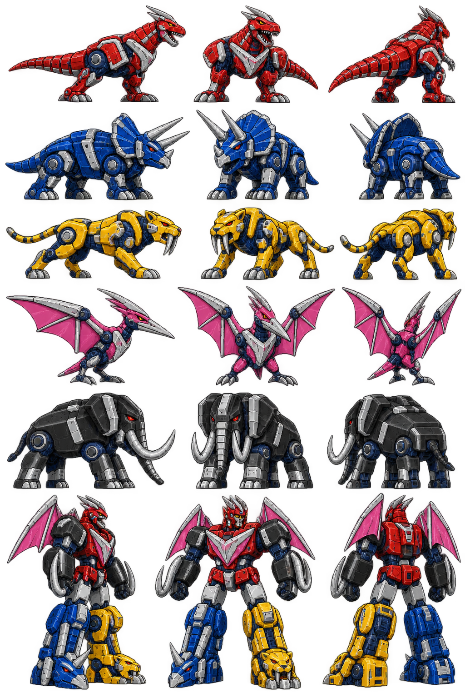

La base visiva della campagna. Le tavole di riferimento non equivalgono ad animazioni definitive. Il primo livello utilizza gli asset indicati sotto; lo stato completo è in ASSET_STATUS.md.
Fonte comune per sprite, selezione e HUD. 8 pose × 6 righe. Il fotogramma di danno di Onyx è escluso.

Boss del porto: 8 pose, integrato nel livello.



Centipede, Trivor, Mimesi, Kharon, Custode, Vespera, Eclipse. Pose da allineare e validare prima dell'integrazione.

